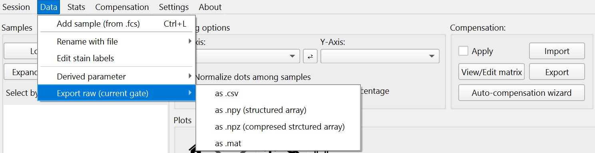
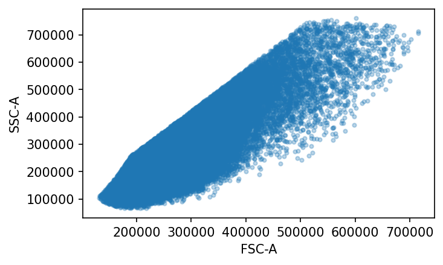
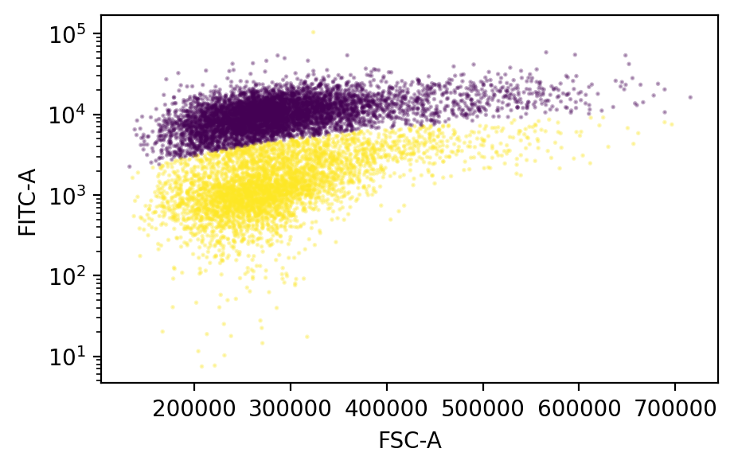

Access gated raw data
EasyFlowQ offers essential tools for exporting gated samples as raw data in widely-used formats. These formats are compatible with popular programming languages, ensuring seamless integration and accessibility for more complex analysis.
Export as csv, npy(z) and mat
The options for exporting the currently selected samples and subpopulation samples, with selected gate applied, can be access from the menu bar: Data --> Export raw (current gate)

Popular formats including csv, npy/npz (numpy array) and mat (matlab data file) are available for export. When exported, each sample (or subpopulation) will be exported as a single file with names of the samples. If the file name exist, either due to file pre-existing in the file system or another sample exported earlier has the same name, EasyFlowQ will attempt to export it under a different name (e.g. sample1_1, sample1_2, etc.).
Access the exported raw data in npy format
npy is the standard file format used by numpy to store single matrix. Due to that regular numpy array does not store metadata (e.g. channel names), the exported npy is in fact a structured numpy array, with channel names as the field name in the array.
Here we provide a simple example importing an exported, gated sample in the npy format, and subsequently performs a simple clustering analysis with a mixed Gaussian model. The notebook of this example is also available in the github repo (here).
Import the required packages
import numpy as np
import matplotlib.pyplot as plt
from sklearn import mixture
Load the npy file (can be downloaded here) and access to the channel names:
flow_data = np.load('./01-Well-B1.npy')
print(flow_data.dtype.names)
This output: ('FSC-H', 'FSC-A', 'SSC-H', 'SSC-A', 'FL1-H', 'FL1-A', 'FL6-H', 'FL6-A', 'FL10-H', 'FL10-A', 'FL11-H', 'FL11-A', 'FSC-Width', 'Time')
Plot the data in the channels that are gated in EasyFlow
fig, ax = plt.subplots(figsize=(5, 3))
fig.dpi = 150
ax.plot(flow_data['FSC-A'], flow_data['SSC-A'], '.', alpha=0.3)
plt.xlabel('FSC-A')
plt.ylabel('SSC-A')

Clustering the data based on FL1-A (FITC) vs FSC-A data with mixed Gaussian mode
# convert to regular numpy array, and filter out <0 elements
flow_2d = np.vstack([flow_data['FSC-A'], flow_data['FL1-A']]).T
flow_2d = flow_2d[np.all(flow_2d > 0, axis=1), :]
# transform and standardize data before clustering
cluster_input = flow_2d.copy()
cluster_input = np.log(cluster_input)
cluster_input = (cluster_input - np.mean(cluster_input, axis=0)) / np.std(cluster_input, axis=0)
# fit the Gaussian Mixture Model
clf2 = mixture.GaussianMixture(n_components=2, covariance_type="full")
clf2.fit(cluster_input)
Plot the clustering result with sub-sampling
sub_sample_index = np.random.choice(np.arange(len(flow_2d)), 10000, replace=False)
fig, ax = plt.subplots(figsize=[5, 3])
fig.dpi = 150
ax.scatter(x=flow_2d[sub_sample_index,0], y=flow_2d[sub_sample_index,1],
c=clf2.predict(cluster_input[sub_sample_index, :]),
alpha=0.3, s=1)
ax.set_yscale('log')
ax.set_xlabel('FSC-A')
ax.set_ylabel('FITC-A')
